1. 长度测量
测量两点之间的直线距离，适用于边缘长度、两点跨度等场景。
1.1 适用场景
测量两点之间的直线距离，例如：测量边缘长度、两点间的跨度、缺口宽度等。
1.2 操作步骤
-
1选择工具在【测量】模式下，点击测量工具栏，选择【长度】按钮。
-
2选择待测两点在屏幕上点击两个待测点。点击【撤销】图标可调整点位；点击单点后可用上下左右按钮进行位置微调。
-
3查看结果系统自动计算两点之间的长度，并将结果显示在右上角。如需取消，点击【删除】图标。
-
4保存或删除屏幕上方显示当前测量数据。点击【保存】按钮可将数据保存到 U 盘或 SD 卡；点击【删除】图标删除当前测量。
3D 点云视图：如需观察 3D 点云视图，点击【3D】按钮。拖动屏幕可旋转视角；点击【复位】恢复初始视角，【缩放】缩放视图，【保存点云】保存点云数据，【深度渲染】对点云进行颜色渲染。
2. 点到线（点到直线距离）测量
测量目标点到基准直线的垂直距离，适用于边缘偏移、孔位中心到参考边等场景。
2.1 适用场景
测量某一点到指定直线的垂直距离，例如：叶片边缘到基准线的距离、孔位中心到参考边的偏移量等。
2.2 操作步骤
-
1选择工具点击底部工具栏 点到线 按钮。
-
2确定基准在屏幕上点击两点，确定一条基准直线。
-
3选择目标在目标位置点击任意一点，系统自动计算垂直距离。
-
4微调与保存若点位有偏差，点击 微调 重新读数。确认后点击 保存 或 截屏。
结果判读：显示数值即为目标点到基准直线的垂直距离；建议重复测量 2–3 次取一致值。基准直线两选点应位于同一平面且边缘清晰。
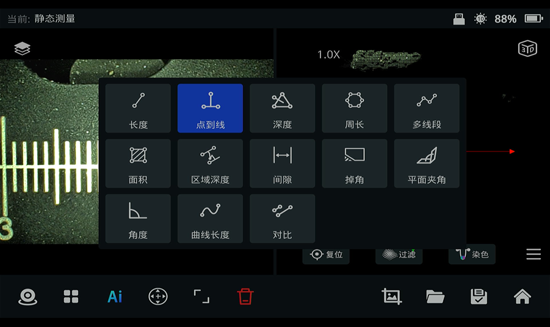
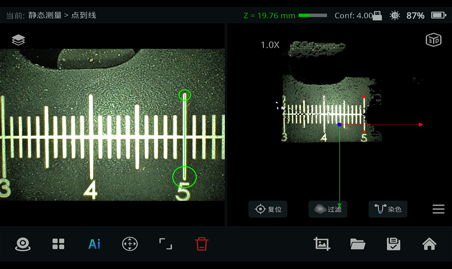
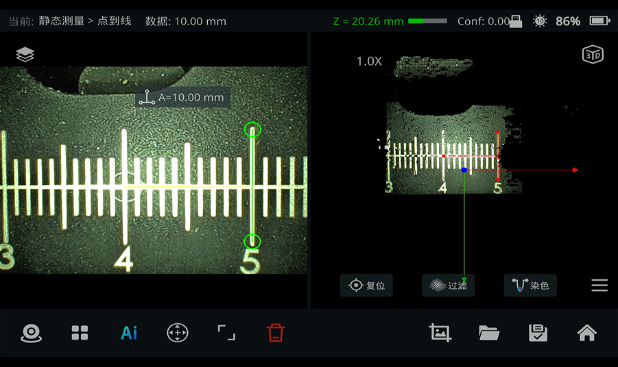
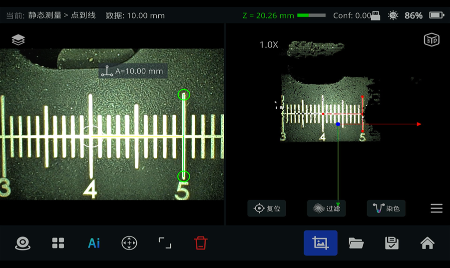
点到线测量示例 图 4.2
3. 深度（点到平面）测量
通过三点建立基准平面，测量目标点到该平面的垂直深度，适用于凹坑、台阶高度差等场景。
3.1 适用场景
测量某一点到指定平面的垂直深度，例如：凹坑深度、台阶高度差、平面内某一点的下沉量等。
3.2 操作步骤
-
1选择工具点击底部工具栏 深度 按钮。
-
2建立平面在基准平面上点击 3 个点建立平面模型；可借助点云视图判断三点是否共面。
-
3选择目标在需要测量的位置点击任意一点。
-
4读数与保存系统自动计算并显示深度值。确认后点击 保存 或 截屏。
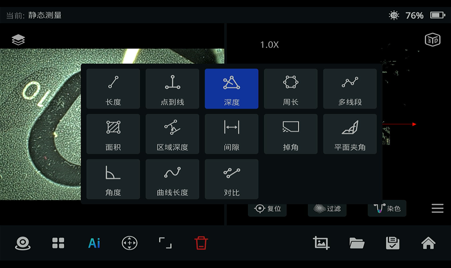
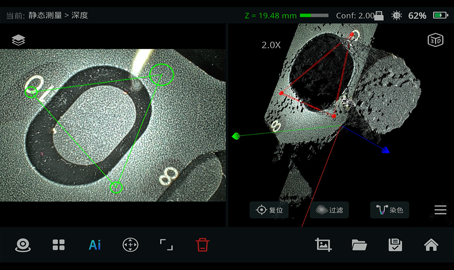
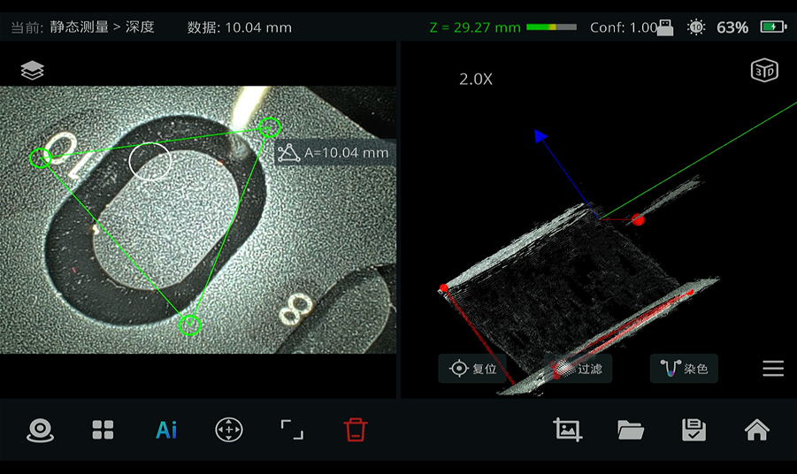
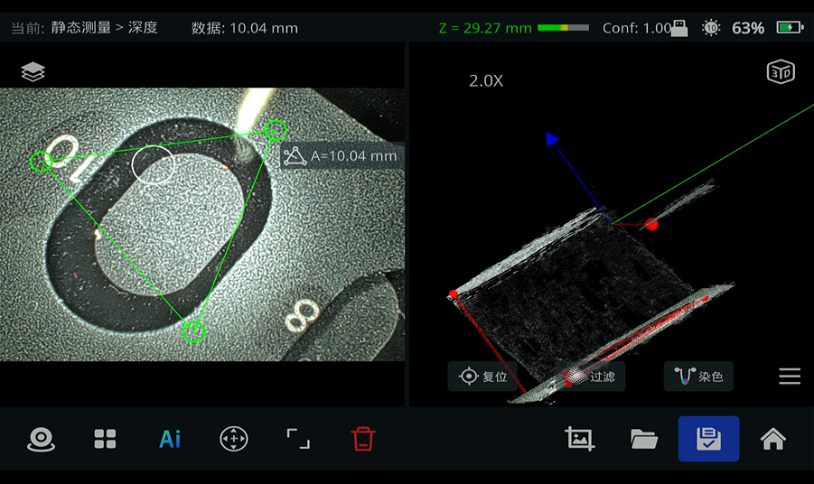
深度测量示例 图 5.2
6. 区域深度测量
在选定区域内评估各点相对基准平面的深度分布，支持拖动测量点获取最大深度值。
6.1 适用场景
测量指定区域内各点相对基准平面的深度分布，例如：凹坑最大深度、腐蚀区域深度、磨损面下沉量等。
6.2 操作步骤
-
1选择工具在测量模式下选择 区域深度 按钮。
-
2建立基准在区域较高平面上点击 3 个点，建立基准平面。
-
3定位测量点系统自动生成 4 号深度点，拖动该点可读取不同位置深度。
-
4记录结果拖动过程中取最大值作为区域最大深度，点击 保存 并记录凹坑最深处数值。
结果判读：拖动 4 号点过程中显示的数值即区域内该点到标定平面的深度；取拖动过程中的最大值作为区域最大深度。
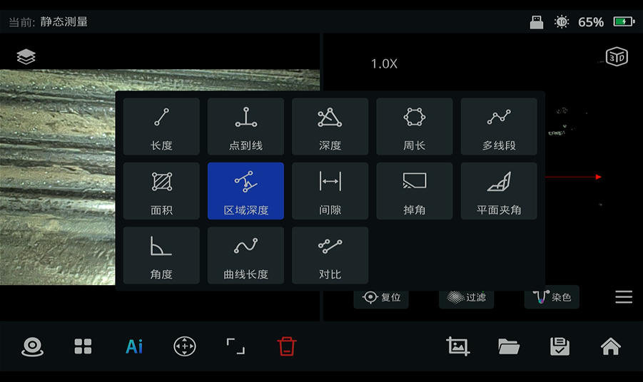
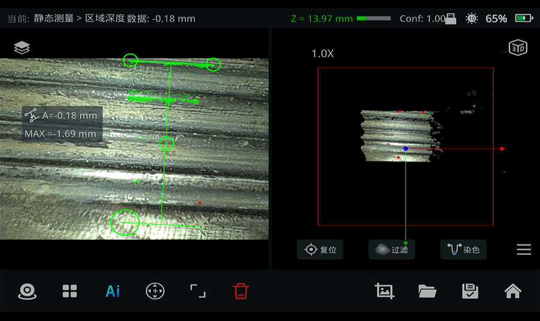
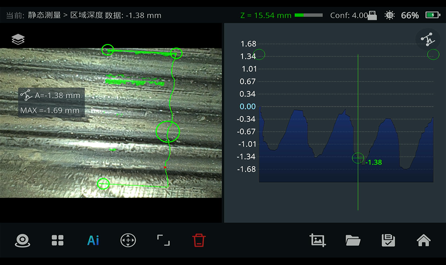
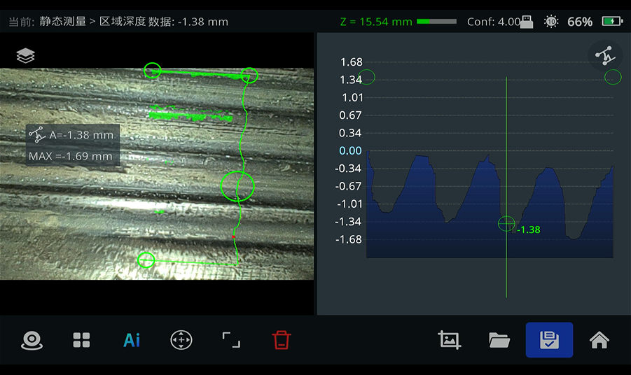
区域深度测量示例 图 6.2
7. 平面夹角测量
分别拟合两个空间平面，自动计算并显示二者之间的夹角，适用于装配面、坡口等角度检测。
7.1 适用场景
测量两个空间平面的夹角，例如：装配面角度、坡口角度、结构件相对角度等。
7.2 操作步骤
-
1选择工具点击底部工具栏 平面夹角 按钮。
-
2拟合第一个平面在第一个平面上点击至少 3 个点，用于拟合平面。
-
3拟合第二个平面在第二个平面上点击至少 3 个点，用于拟合平面。
-
4读数与保存系统自动计算并显示两平面夹角。确认后点击 保存 或 截屏。
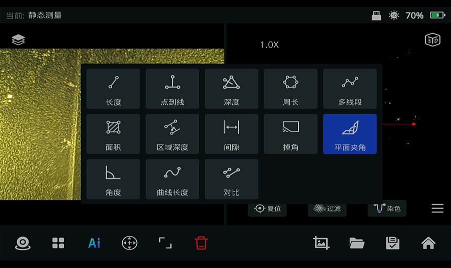
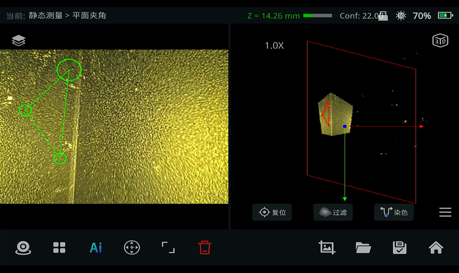
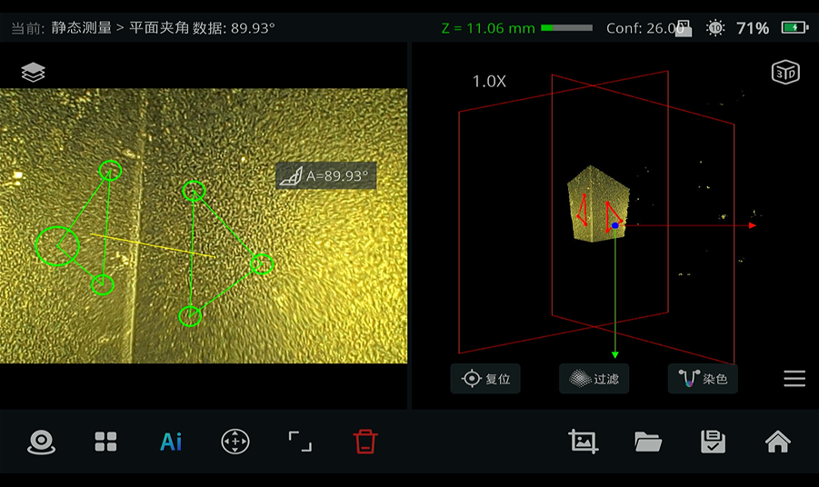
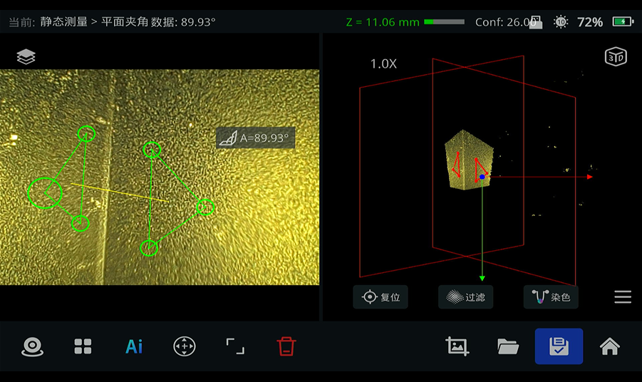
平面夹角测量示例 图 7.2